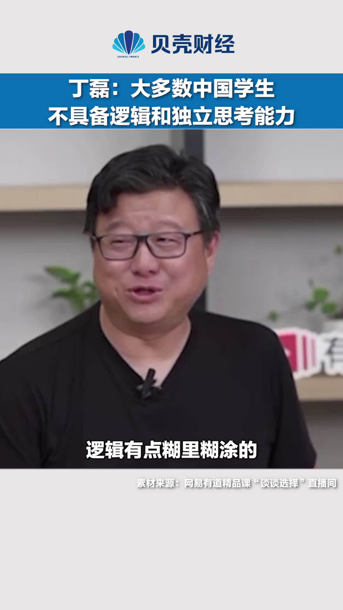

哈哈哈，学生们好难//@美人她爹:招的学生思考了，说人家没经验不要乱提建议，不说了，说人家没独立思考能力。其实只要工资够低时间够长，都可以@福布斯中文网:【#丁磊称大多数中国学生不具备独立思考能力#】6月20日晚，在网易有道精品课“谈谈选择”直播间中，谈到网易的选人标准时，丁磊表示：“网易选人最重要的素质就是“独立思考和逻辑能力”，但这是绝大多数中国学生不具备的，包括很多名校毕业生也不具备。” @新京报贝壳财经 新京报经济新闻的微博视频  302万次播放 00:20
 新京报经济新闻的微博视频
新京报经济新闻的微博视频